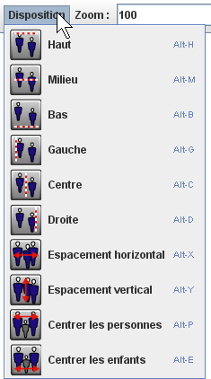

Placement à la souris - Placement au clavier - Alignements et espacements de personnes
Vous pouvez déplacer tous les objets d'un arbre en :
Quand un ou plusieurs objets sont sélectionnés, vous pouvez les déplacer avec les flèches de votre clavier . Le déplacement appliqué est d'un pixel.
Si vous appuyez sur , le déplacement est par 5
pixels.
Si vous appuyez sur la touche , le déplacement est par
10 pixels.
Si vous appuyez sur les touches et , le déplacement est par 15 pixels.
Quand une ou plusieurs personnes sont sélectionnées, vous pouvez demander à GénéGraphe de gérer les alignements. Allez dans le menu Disposition. Vous y trouvez un choix de possibilités :
|  |
Le choix "Haut" aligne horizontalement toutes les personnes sur la personne la plus haute. Le choix "Milieu" aligne horizontalement toutes les personnes au milieu en tenant compte de la personne la plus basse et de la personne la plus haute. Le choix "Bas" aligne horizontalement toutes les personnes sur la personne la plus basse. Le choix "Gauche" aligne verticalement toutes les personnes sur la personne la plus à gauche. Le choix "Centre" aligne verticalement toutes les personnes au milieu en tenant compte de la personne la plus à gauche et de la personne la plus à droite. Le choix "Droite" aligne verticalement toutes les personnes sur la personne la plus à droite. Le choix "Espacement horizontal " répartit les personnes horizontalement entre la plus à gauche et la plus à droite. Le choix "Espacement vertical " répartit les personnes verticalement entre la plus haute et la plus basse. Le choix " Centrer les personnes " centre les parents sélectionnés par rapport aux enfants. Le choix " Centrer les enfants " centre les enfants par rapport aux parents qui sont sélectionnés. |